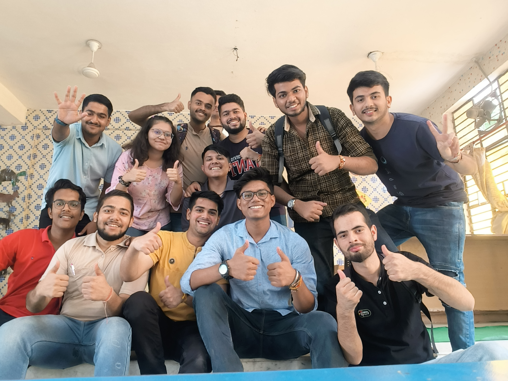
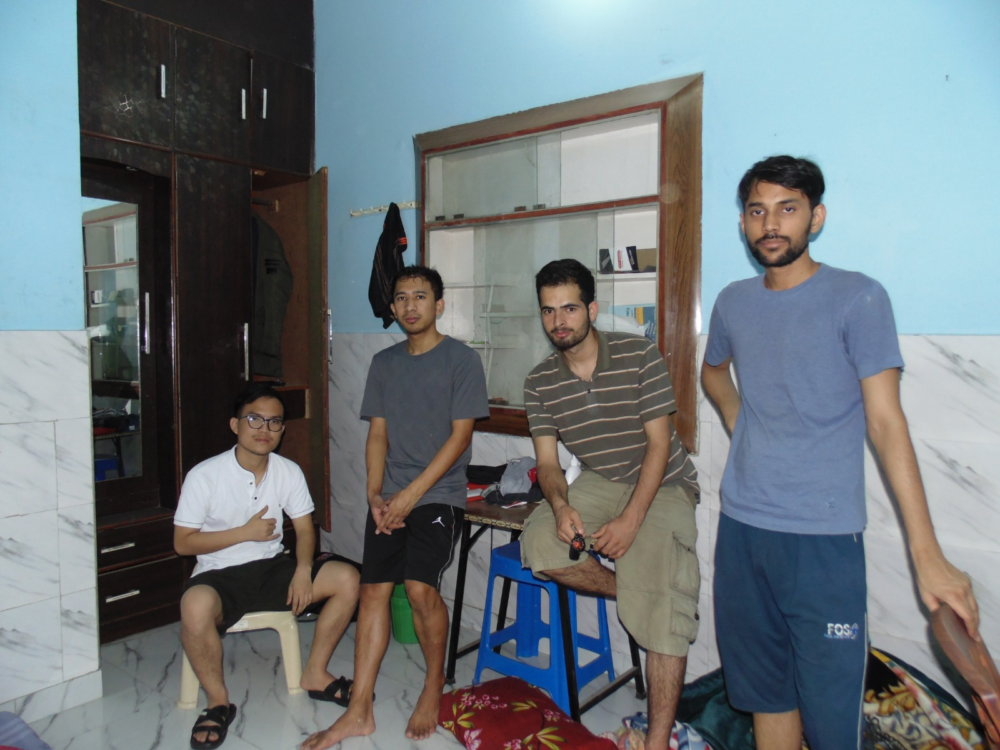
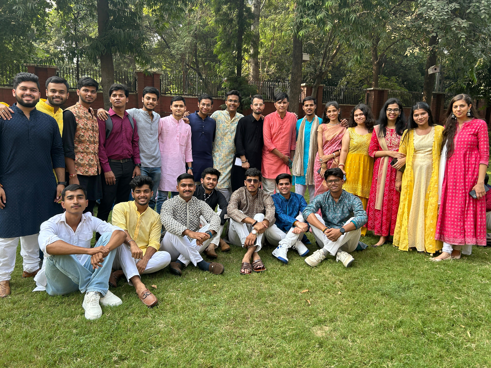
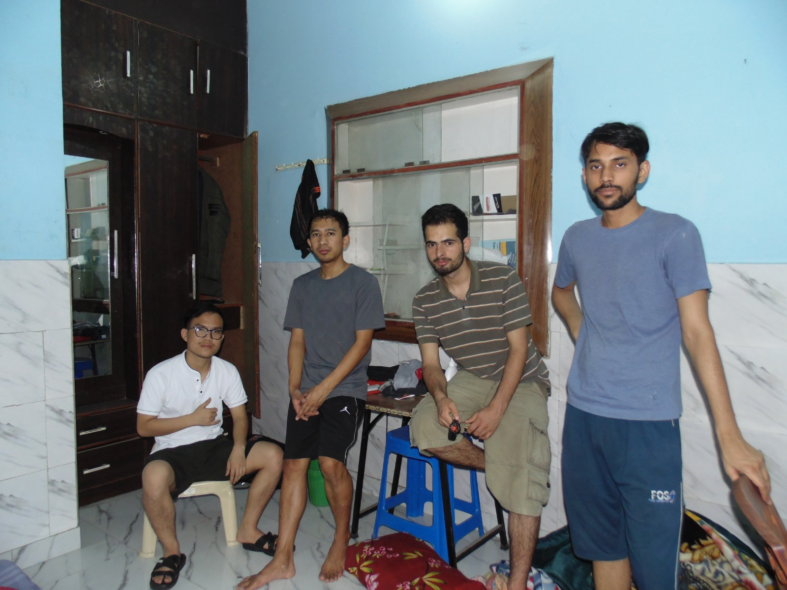
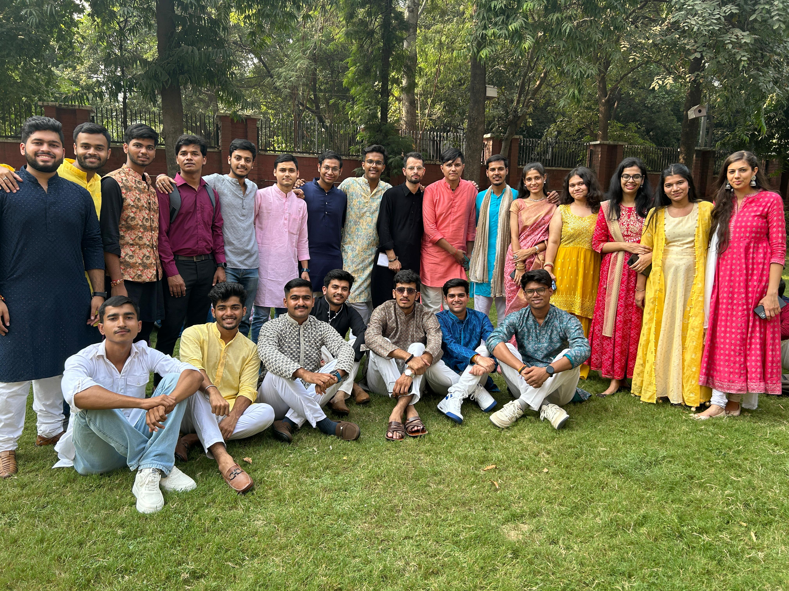

My College Journey
Academics
I am pursuing my B.Tech in computer sceince at MSIT.
I have joined this course back in 2023 and it is 4 year progam. There were a lot of subjects till now and there will be more, some boring engineering subjects while others are core and interesting ones.Though we have to learn all the subject ofcourse all are realted to engineering in any aspect.This journey has been offull of toils and moils till now,but that is the thing that makes humans diffrent than machines or AI's


Beyond the Classroom
I don't have much involment in fests,
However take active participation in UBA (scoial welfare society) , prakrati. We get often to visit villages around our college for different events like sanitation, orphanahge visit, worker's rights etc.
 


